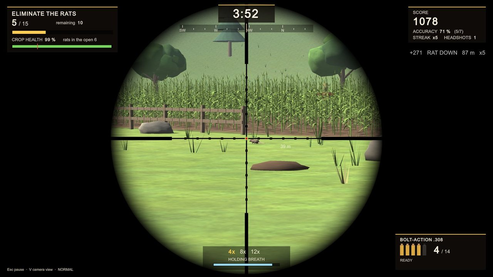

Virtual reality (VR) places the user inside a computer-generated world. A head-mounted display (HMD) renders a separate image for each eye, and a tracking system measures where the head and hands are, so that the image changes exactly as the user moves. Augmented and mixed reality (AR/MR) keep the real world visible and register virtual content to it. Since 2019 the industry has converged on OpenXR, a royalty-free standard from the Khronos Group, which lets one application run on headsets from Meta, Valve, HTC, Microsoft and others. Consumer standalone headsets such as the Meta Quest 3 combine inside-out 6DoF tracking, controller-free hand tracking and colour passthrough cameras, so the same device supports both VR and MR.
Building a good XR application involves more than placing a camera in a 3D scene. The frame rate must stay at the display's refresh rate (72–120 Hz), because dropped frames and artificial motion cause cybersickness. Input must work with whatever the user holds, or with bare hands. Interfaces must exist in 3D space, because a flat 2D overlay does not work inside a headset. Sound must be spatialised so that the user can locate threats, and in MR the virtual content must be registered to the real room.
NEON BREACH is a Unity 6 project that implements these requirements in a set of games that share one technical foundation. The project has four game modes, all started from one main menu. The main scene contains three of them (Shooter, Archery and Parachute), which the player can switch between at any time; the fourth, Rat Shooter, lives in its own scene and is loaded from the menu. A bonus Farm Sniper level is a further standalone scene opened from the Editor's Neon Breach menu. All of them reuse the same input, audio and settings systems. [[t-games]] summarises the games and [[f-games]] shows them running.
| Game | Scene | Core experience | Main XR / technical highlights |
|---|---|---|---|
| Shooter | NeonBreach.unity | Endless waves of six enemy types in a neon arena; three weapons, grenades, an upgrade shop between waves, power-ups, a boss every fifth wave, two arenas and two-player split-screen co-op | Tracked-hand aiming, hand-gesture firing, haptics, binaural audio, MR "breach" mode |
| Archery | NeonBreach.unity | 3 rounds × 10 arrows at nine static, pop-up and rail targets 10–40 m away; the wind changes every round | Bow held in the tracked hand; custom ballistics with gravity, drag and wind |
| Parachute | NeonBreach.unity | Jump from a plane at 3,000 m over a procedural island, free-fall through rings, deploy the canopy, flare and land on a pad | Quadratic-drag physics, comfort vignette driven by fall speed, first-person VR flight |
| Rat Shooter | RatShooter.unity | Cartoon farmyard; shoot mice with distinct AI personalities across five levels | Custom toon shader, procedural creature animation, NavMesh hide-and-flee AI |
| Farm Sniper (bonus) | FarmSniper.unity | Protect the crops by eliminating 15 rats with a scoped bolt-action rifle before time runs out | Simulated bullets (820 m/s with gravity), variable scope, VR rifle with render-texture scope |

The game decides the mode at runtime. If an OpenXR head device is present, the VR rig activates; otherwise the same scene plays on the desktop. No separate VR build or scene is needed.

PlayerInputState, so every game mode works on every device without device-specific gameplay code.As the task required, the whole project was inspected against the ten evaluation criteria before this report was written. Four gaps were found; each was fixed and re-verified before it is documented as working ([[t-gaps]]).
| Gap found | Criteria affected | Improvement implemented and verification |
|---|---|---|
| The XR loader list was empty and every OpenXR feature was disabled, so VR could not start until the user ran a manual set-up step | 4, 5, 8 | Created the XR settings and ran the project's own Configure OpenXR features tool: OpenXR is the loader, with 5 controller profiles, Hand Tracking Subsystem and Meta Hand Tracking Aim enabled. OpenXR project validation: 0 issues ([[ch5]]). |
| XR Project Validation warned that Run In Background was off, which causes head-locked rendering when the headset's system menu takes focus | 4, 9 | Enabled PlayerSettings.runInBackground; validation now reports 0 issues in 12 checks ([[f-xr-validation]]). |
| Number keys 1–9 mapped to the wrong Input System keys (1/2/3 → Shift/Shift/Alt), breaking weapon selection and shop quick-buy | 7, 9 | Fixed the key mapping in DesktopInput.ToKey; keys 2, 3 and 1 verified to select the rifle, the scatter cannon and the pistol ([[ch10]]). |
| In VR, switching modes logged "Cannot set field of view on camera … while VR is enabled" | 4, 8 | Added Util.SetFov, which skips FOV writes while the camera renders in stereo; VR mode switching now produces 0 warnings, and the desktop sprint FOV still changes from 87° to 94°. |
In addition, the VR pipeline, which previously had only been compile-checked, was executed end to end with Unity's OpenXR Mock Runtime. Simulated head and controller poses and button presses were injected through the OpenXR conformance-automation extension, and the resulting VR frames, haptic events and registration values were recorded ([[s-mockvr]]).
After the audit, the project was inspected once more for small improvements that would make it more polished without changing its gameplay, scenes or assets. Five changes were made ([[t-polish]]); each was compiled, played and captured in the running Editor, and two of them were corrected after the first test showed a problem (Chapter 10).
| Improvement | Mode / area | What changed and how it was verified |
|---|---|---|
| Archery trajectory guide | Archery (C7, C8) | New Arrow.Predict runs the arrow's exact flight model (gravity, drag, wind, raycasts); ArcheryMode.UpdateGuide draws it as a dotted arc from the arrow tip while the bow is drawn. Verified: 15–16 points ending on the range floor at 36–43 m; 3.1 ms per frame ([[f-guide-partial]]) |
| Fade transitions | All modes (C7) | HUD.FadeIn on every mission, tutorial, mode start and return to menu. Verified frame by frame: brightness 3.0 → 48.1 → 128.3 at 0 / 0.25 / 1.0 s ([[f-fade]]) |
| Fading results screen | Archery, Parachute (C7) | Results fade in over 0.5 s instead of appearing at once ([[f-resfade]]) |
| Button hover animation | All menus (C7) | Pulsing glow and accent bar on every neon button, matching the Rat Shooter button ([[f-pause-hover]]) |
| Animated mode cards | Pause, results (C7) | Each mode card sits on a panel that brightens and pulses on hover ([[f-cards]]) |
The Shooter, Parachute and Rat Shooter already provided the feedback listed in the task (enemy hit flash and knock-back, hit markers and damage numbers, wave banners, a deployment prompt inside the deploy window, landing-accuracy scoring, mice that stop, run, change direction and flee from near misses, cartoon eliminations, weapon recoil and high scores in every mode), so their gameplay code was left unchanged to avoid risk; Chapters 8 and 9 document these features.
Chapter 1 introduces the project. Chapters 2–11 each address one ESE criterion, in rubric order: problem definition and requirements (Ch. 2), literature survey (Ch. 3), system architecture and design (Ch. 4), AR/VR technology implementation (Ch. 5), tracking, registration and spatial understanding (Ch. 6), 3D modelling, assets and environment (Ch. 7), interaction and UI/UX (Ch. 8), advanced AR/VR features (Ch. 9), technical documentation (Ch. 10) and the final demonstration (Ch. 11). Chapter 12 presents results and discussion, Chapter 13 concludes and Chapter 14 describes future scope. The references follow; Appendix A lists the OpenXR Mock Runtime verification procedure and Appendix B is a screenshot gallery.